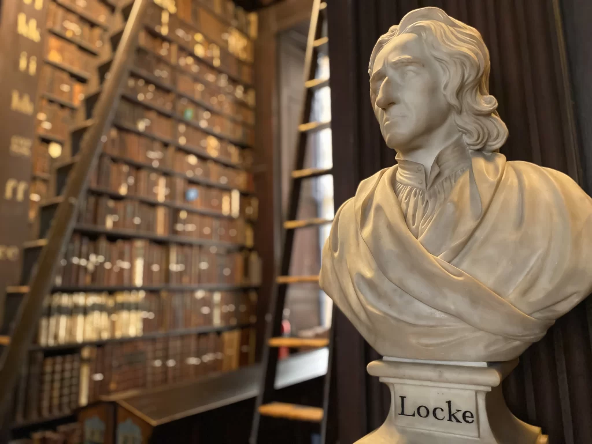

John locke
John Locke nasceu em 29 de agosto de 1632, em Wrington, Inglaterra, em uma família protestante puritana. Estudou na Westminster School e depois na Universidade de Oxford, onde se interessou por filosofia, medicina e ciências naturais. Tornou-se médico e conselheiro de Lord Ashley, influente político inglês, o que o aproximou das discussões sobre política e economia. Perseguido por suas ideias liberais, exilou-se na Holanda em 1683, retornando à Inglaterra em 1688 após a Revolução Gloriosa. Publicou obras fundamentais como Carta sobre a Tolerância (1689), Ensaio sobre o Entendimento Humano e Dois Tratados sobre o Governo (1690), defendendo o empirismo, os direitos naturais e o governo baseado no consentimento popular. Locke morreu em 28 de outubro de 1704, em Oates, Inglaterra, deixando um legado que moldou o liberalismo e a democracia moderna.
